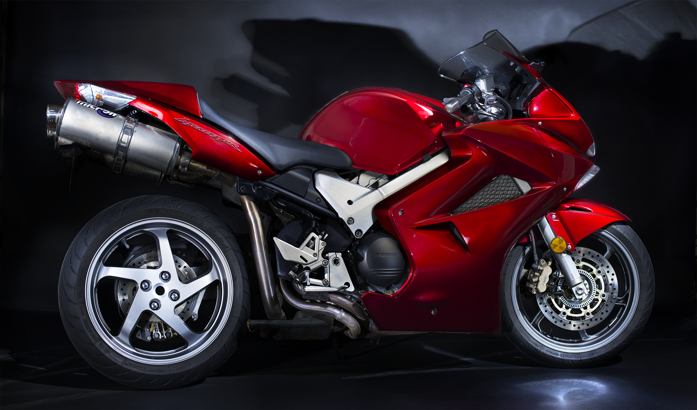
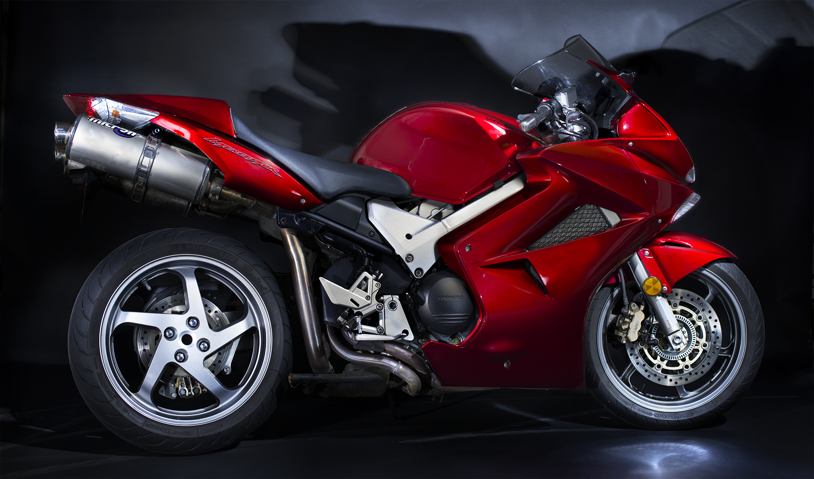

A
Background
It all started in high school with a Pentax ME Super 35mm camera and a decidely uncool Honda CB360. The Honda CB360 was not the visual spark behind my current work, but it was the first of many motorcycles to come. When I moved to Seattle in 1998, I started exploring the area on two wheels with a Honda CBR600 and later a Honda VFR800 Interceptor.
On the automobile side, my initial inspiration was a photograph of my dad with his 1958 Corvette, which sadly he sold, as so many do, when the kids arrived. But I loved the lines of that car and the subsequent generations of Corvettes and, like any teenage boy, dreamed about driving all kinds of sports cars. I would have to wait until much later before that dream was realized.
Photography was a bit slower to develop in my life. It wasn't until the advent of digital photography and post-processing software like Photoshop that I really started to get into it. The immediate feedback of digital photography and the unprecedented ability to manipulate an image allowed me to reach new levels of creative expression.
Fast forward to today and I'm driving instead of riding. I've had the pleasure of photographing some amazing cars and motorcycles and I'm always looking for the next great shot. I hope you enjoy the images on this site and I look forward to working with you to capture the beauty of your ride.
Current Photography
On Location
Living in the Pacific Northwest gives us a great variety of options for locations, from industrial urban to lush forests to the beautiful coastline. I love to shoot in the early morning or late afternoon to take advantage of the best light. I'm always looking for new locations and I'm open to suggestions.
Light Painting
Light painting combines the interest of an outdoor location with the lighting effects of a studio. This is my favorite type of photography because it allows me to create a unique image that is not possible with traditional photography. Typically, this will involve multiple shots on location and then blending them together in post-processing. The results can be stunning.
Studio
Currently, I am only doing "studio" photoshoots for motorcycles due to size constraints.

 
